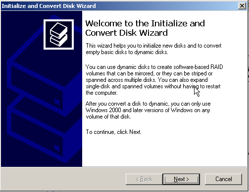
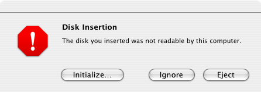

When connecting or disconnecting an HD24 ADAT FST drive, always take into consideration the precautions that apply for your hardware (switching off devices before swapping drives, etc).
Until someone releases an official FST driver (which is not likely to happen any time soon), your operating system will not support HD24 ADAT FST disks. This means that your operating system will recognize that there is a drive connected to your machine, but it will not understand its contents.
Because of this, ADAT disks are usually incorrectly recognized as unformatted, and the operating system will possibly offer to initialize or format it for you.
Under Windows this may look as follows:
You should Cancel this dialog and steer clear from such initialization actions.
Likewise, if you are a Mac user, you will see:
You should click Ignore in this case.
If you initialize the disk, it will no longer be readable by the HD24 recorder. Should you be reading this after it is already too late, you may need to perform a data recovery, as outlined in the recovery section of this manual.